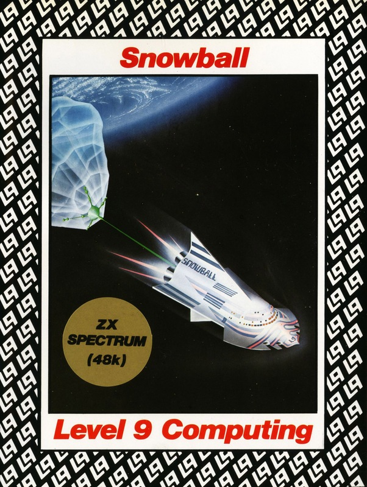
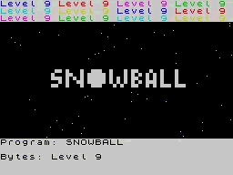
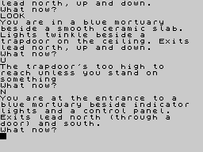
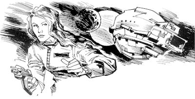

Snowball


{kind=link}

| Publisher: | Level 9 Computing |
| Price: | £9.95 |
| Year: | 1983 |
| Source: | CRASH, Issue 6 |

Snowball is a large adventure game with over seven thousand locations but don’t let this dissuade you from undertaking the adventure as many of the locations are repeated. Although this may give rise to misgivings concerning the structure of the game, let me at once allay such fears. Snowball 9 is an interstar transport and the repeated locations reflect the symmetry inherent in any well-designed, modular spacecraft.
Level 9 have produced a lavish booklet giving 12 pages of information and background that leaves the fanciful efforts of less literate manufacturers firmly folded within their highly decorative cassette cases. In short it is excellent and reveals a literary style and flair which imbues the whole work, and owes much to a careful consideration of the game as a wholesome concept as opposed to a mere flight of whimsy. TV Star Trek fans may know something of which I speak.

The booklet, like the adventure, is both informed and pointedly witty in a way that only science fiction can be. It includes a geopolitical summary of 2195 and paints a not implausible picture of five big sophisticated, fully urbanised nations overseeing a status quo that has the Free Nations poor and under-developed. In the near future the Big 5 will finally decide to help but in the 2190s they are chasing stars.
You play Kim Kimberley, secret agent extraordinary, and you are described as fairly intelligent and athletic with brown eyes and fair hair. Captain Kirk perhaps? Unlikely since you are 55 kilos and only 1.7m tall — and you’re a woman.
A detailed background in the booklet tells of how Snowball 9 set off for the EEC’s Ceres base to colonise the star system Eridani A. Passenger discs carrying 200,000 colonists were followed by the Snowball’s engine unit accelerated rapidly by its four great fusion motors. Ten ton blocks of ammonia-ice, fired from accelerators beyond Pluto, were reeled in by Snowball’s skyhooks to be used later as fuel for the fusion drives. The ice-shell, which gave the Snowball Series its name, formed most of the mass of the completed craft.

You begin the adventure inauspiciously enough in a coffin — a freezer coffin — as featured in science fiction films. Much of the early phase is spent sidestepping (or waiting — a clue) the ominous clanking and indubitably deadly nightingales as you struggle to rise from the lower levels of a passenger disc. Your mission is to find the main control room in the engine unit and save the starship. You find yourself in an intimidatingly vast starship but part of the adventure is to find that part which is most consequential to your mission.
The first thing that strikes you during the early scenes is the quality and substance of the descriptions. The language is very imaginative: ‘YOU ARE ON A SIGNIFICANT CYLINDRICAL LEDGE ABOVE STEPS TO A TOROIDAL WALKWAY. TRANSPEX TUBES LEAD AWAY THROUGH A MAZE OF WIRES AND MACHINERY.’ and ‘THE SOUTH WALL IS A WAVERY AND OBSCURE CONFUSION OF FLICKERY VIDS.’ Some of the examine reports are amazingly long and detailed. This literary competence is further affirmed with the inclusion of science fiction scenes and devices. Cylindrical airlocks lie between 2 iris doors, cyladders transport you up and down (or on a larger scale — around); there are transpextubes, ultrasound scalpels and plasteel, plastic with the strength of steel.
Well, if you insist on receiving some clues. You must have the helmet before entering the air lock (although you are given one or two moves to get back out) and you need the probe to repair the robot which gives you a space helmet in return.
You don’t score points for collecting treasures in Snowball: instead you gain by doing things that are steps on the way to the eventual goal, e.g. assembling a working spacesuit scores points. According to that learned script, the booklet, if you get killed you lose a lot of points. It’s amazing what you can learn if you read the instructions!
Snowball has no graphics and is a trifle slow but I would nevertheless highly recommend it. The adventure sets new standards in descriptions and can be likened to a good science fiction novel. The full, vivid and highly imaginative text evokes a mental imagery that far surpasses that which any simple computer graphics might achieve.

The program is very user friendly both with the input it will accept and its responsiveness. There is a pleasantly surprising width of intelligent responses for any input you may think up. Definitely an adventure for someone with a bad case of the ‘You Can’ts’. Those powerful and realism-creating commands, Search and Examine, are used extensively to a point when you can certainly believe that Level 9 have devised their own super-compact adventure language known as ‘a-code’. There’s no question that they’ve packed a lot into this one.
Level 9 have produced a very good adventure that sets new standards in description and data compaction. This is very much my idea of an adventure and is set to become a classic.
| Difficulty: | 9 |
| Atmosphere: | 10 |
| Vocabulary: | 9 |
| Logic: | 10 |
| Debugging: | 10 |
| Overall: | 9 |